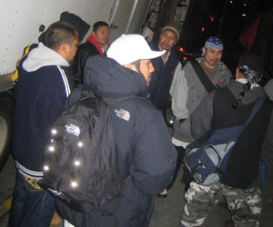

Submitted on Wed, 01/10/2007 - 4:39am
Members of the Industrial Workers of the World, organizers at New York warehouses were sacked over the festive period, in retaliation for their successful unionising drive...
This week owners from four different warehouses illegally threatened to call immigration or terminate union workers due to their immigration status in clear retaliation for the workers' union activities. Tuesday's march and picket will target Amersino Marketing Group, 161 Gardner Ave, Brooklyn, NY.
Over the last year and half, food distribution warehouse workers in northern Brooklyn and Queens have organized a union with the IWW. The campaign has met with resounding success: workers have organized in five different warehouses, several of which have been certified in National Labor Relations Board (NLRB) elections, they have forced their bosses towards full compliance with wage and hour laws, and they have won several major wage and hour violation cases while still other complaints totaling more than $100,000 have been filed with the Department of Labor.
Submitted on Mon, 01/08/2007 - 12:59am
 Berkeley, California
Berkeley, California - IWW Curbside Recyclers at the Berkeley Ecology Center won a small, but important victory Friday, January 5, 2007 by sticking to their guns and refusing to let management violate their IWW union contract.
Currently, all Saturday work must be paid at time-and-one-half standard wages, except work performed before 8:00 AM and after 5:00 PM, which must be paid at double-time (Article VII, Section C, Part 1). The same rules apply for Sunday work. Weekend work is rare, and is usually scheduled the same week as non-working holidays (Thanksgiving, Christmas, and New Years' Day).
Prior to 2001, the workday began at 8 AM and ended at 5 PM. In 2001, the start time was moved up to 6:30 AM by mutual consent by Management and the Union, but the Saturday and Sunday work rules remained unchanged as an incentive to schedule weekend work as little as possible.
Submitted on Sat, 01/06/2007 - 12:45am
 Traducción Beltrán Roca Martínez
Traducción Beltrán Roca Martínez
El dos de enero de 2005, a las 5 de la tarde, en Brooklyn (Nueva York), trabajadores del Sindicato de Alimentación y Derivados (Industrial Workers of the World, I.U. 460) y gente que los apoya organizaron un piquete contra la empresa Amersino Marketing Group en el 161 de la Avenida Gardner, Brooklyn, NY.
Los trabajadores marcharon frente a la distribuidora de productos alimenticios para llamar la atención sobre el juicio civil que tendrá lugar con el apoyo de los IWW en la corte federal, en relación a salarios y horas extraordinarias no remuneradas. La marcha del nuevo año servirá de "recordatorio amigable" al jefe de la compañía de que el salario mínimo en el Estado de Nueva York ha alcanzado 7,15 dólares la hora, el cual Amersino se ha saltado en el pasado.
Submitted on Fri, 01/05/2007 - 3:12pm
 Actions in some fifty cities around the world, including Australia, Canada, Germany, Great Britain, New Zealand and American cities including New York, Chicago, Minneapolis and San Francisco protested Starbucks’ anti-union practices and the wrongful firing of five union activists over the Thanksgiving weekend Nov. 24.
Actions in some fifty cities around the world, including Australia, Canada, Germany, Great Britain, New Zealand and American cities including New York, Chicago, Minneapolis and San Francisco protested Starbucks’ anti-union practices and the wrongful firing of five union activists over the Thanksgiving weekend Nov. 24.
The global day of action kicked off Nov. 22, when five New York City IWW baristas illegally fired for their union activities entered Starbucks regional headquarters to demand their jobs back and that Starbucks cease its scorched earth union-busting policy.
As SWU members and community supporters picketed outside, the fired baristas addressed their demands to Starbucks “Partner and Asset Protection Investigator” Marc Stella inside the company’s posh office across from the Empire State Building.
Submitted on Fri, 01/05/2007 - 2:50pm
Headlines:
- Global actions target Starbucks union-busters
- ‘Socialist’ bosses attack Scottish Wobblies
- Restaurant Workers’ Justice Ride
Featured Articles:
- Troqueros picket LA rail-truck hub - IWW truckers wage quickie strike against BNSF Santa Fe.
- Starving amidst world’s plenty - As rich get ever richer, workers everywhere are losing ground.
- Resisting the attack on faculty - Two-thirds of college teachers now ‘adjuncts’; ill-paid, no rights.
Also - more organizing news.
Download a free PDF Copy of this issue.